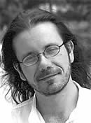
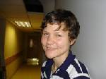

| |
 Yuri Andrukhovych was born in 1960 in Ivano-Frankivsk, Ukraine. He began to publish his poetry in literary journals in 1982. In 1985, he and others founded the popular literary performance group “Bu-Ba-Bu,” which was a seminal part of the literary culture of the eighties in Ukraine. In addition to poetry, he is the author of numerous essays and several novels, most recently "The Twelve Hoops" (2003). His works have been translated and published in Poland, Canada, the United States, Germany, Hungary, Austria, Russia and Finland. "Military Scenes" is included in "Exotic Birds and Plants," Andrukhovych's book of collected poetry published in 1991. Yuri Andrukhovych was born in 1960 in Ivano-Frankivsk, Ukraine. He began to publish his poetry in literary journals in 1982. In 1985, he and others founded the popular literary performance group “Bu-Ba-Bu,” which was a seminal part of the literary culture of the eighties in Ukraine. In addition to poetry, he is the author of numerous essays and several novels, most recently "The Twelve Hoops" (2003). His works have been translated and published in Poland, Canada, the United States, Germany, Hungary, Austria, Russia and Finland. "Military Scenes" is included in "Exotic Birds and Plants," Andrukhovych's book of collected poetry published in 1991.
|
 Nina Shevchuk-Murray was born in the western Ukrainian city of Lviv. She first came to the U.S. on a Department of State scholarship in 1999. After graduating from her hometown university, she returned to Nebraska to pursue a graduate degree in creative writing. Her translations have been published or are forthcoming in Agni, Prairie Schooner, and Transfusions. She has also published some original poetry and co-edited, with Ladette Randolph The Big Empty: An Anthology of Nebraska Non-Fiction due from UNP in the spring of 2007. Nina Shevchuk-Murray was born in the western Ukrainian city of Lviv. She first came to the U.S. on a Department of State scholarship in 1999. After graduating from her hometown university, she returned to Nebraska to pursue a graduate degree in creative writing. Her translations have been published or are forthcoming in Agni, Prairie Schooner, and Transfusions. She has also published some original poetry and co-edited, with Ladette Randolph The Big Empty: An Anthology of Nebraska Non-Fiction due from UNP in the spring of 2007.
About translating “Military Scenes,” she says: Andrukhovych’s poems’ greatest appeal, as well as their greatest challenge, is the writer’s virtuoso command of the Ukrainian language, the incredible range of his tonal repertoire, and painstaking formal refinement. I have always approached this particular book, Exotic Birds and Plants, more as a writer than a reader, and in translation this approach proved most effective. These are not the kind of poems that, through the process of holistic critical reading, can be rebuilt from scratch, “rewritten,” so to speak, in English; on the contrary, Andrukhovych’s tightly wrought wordplay requires deference and attention to detail.
As a poet and as a translator I favor rhythm as my baseline. From there, I seek a grasp of the syntactic movement through the line—Andrukhovych rarely enjambs his phrases. Last, I attempt to train my ear to hear the original rhymes. The rhymes don’t often make it into the English text, but in translating Andrukhovych one cannot abandon rhyme entirely. I always try to preserve some similarity of sound, as in, for example, “arts–ours,” “fails-waist,” and “roams-ovens.”
“Military Scenes” is a good example of Andrukhovych’s varied diction and technique. In “Kolomya Regiment in Paris” it was important to acknowledge the communal voice and the incantatorial quality of the phrasing that made the tone of the poem elegiac.
“The Demise of Kotliarevskism” is an intentionally difficult poem, and the title is the key to enter it :Kotlyarevsky’s Eneida scandalized and delighted readers with its liberal use of what was considered marginal, dialectic, and even vulgar vocabulary. Andrukhovych’s elegy reincarnates the imagery (Didona, Sybil) and the spirit of that rogue Ukrainian epic.
I consider Andrukhovych’s linguistic density a blessing in disguise, because I can always trust the original to yield its imagery, its internal ties, through carefully matched words—Andrukhovych’s images are descriptive far more often than they are metaphorical. But the reader, as always, will be the judge.
|
|
Jorge Frisancho was born in Barcelona, Spain, in 1967, the son of a Peruvian diplomat, who was transferred back to Lima in 1972. He worked as a journalist and TV writer in Lima from 1986 to 1991. He moved to the U.S. in 1991, and to Chicago in 1997, where he works as an editor and translator. Three of his books have been published: Reino de la necesidad (Lima, Editorial AsltoAlCielo, 1988), Estudios sobre un cuerpo (Lima, Colmillo Blanco Editores, 1991,) and Desequilibrios (Lima, Fondo Editorial de la PUCP, 2004), which was featured as the best book of poetry in 2004 by La Republica in Peru.
|
|
Kelly Austin is Assistant Professor of Romance Languages and Literatures and the College at the University of Chicago. She studies Literature of the Americas and Translation Studies, with a special emphasis on poetry. She translates Spanish-American literature. |
Ervin Lázár, considered the “best living Hungarian author of fairy tales,” was born in Budapest in 1936. He has worked as a journalist and editor. His published works include children’s stories, fairy tales, short fiction, radio plays and a novel.
|
Andrea Németh-Newhauser is an ATA-accredited translator (English - Hungarian). A native of Hungary, she studied languages in Budapest and linguistics at the University of Pennsylvania and the Universität Tübingen in Germany. Apart from a two-year excursion into AM radio, she has been a full-time freelance translator since 1990, increasingly specializing in translations close to literature, such as reviewing translations for the Hungarian edition of National Geographic and subtitling movies. She collaborated on a prize-winning libretto at the International Hans Christian Andersen Musical Competition in Odense, Denmark in 1980, co-authored an article on the development of the imperative in Early Modern English, and has published two translated short stories in Two Lines and one in Passport: The Arkansas Review of Literary Translation.
About translating “The Lad,” she says: As always, translating a story by Ervin Lázár was a delight. This particular story presented few linguistic challenges for the translator, once I had made the initial decision about handling names, allusions to Hungarian folklore, and word play. My primary aim was to preserve the author’s voice while emphasizing the universal over the particular. In terms of word choice this meant paying attention to the semantic field of all nouns, verbs, and adjectives, and finding an equivalent with the most similar semantic field and the most similar emotional “load.”
The names of characters were changed, or minimally Anglicized, but I attempted to retain their playfulness and the nature of the puns or allusions involved in them. For example, I changed the name of the clown, Lembozo Virtuoso, from the original Lembozó Lengubozó, because the meanings involved in the last name (len = flax, gubó = cocoon) and the alliteration did not trump the need for a name that rhymes. I would have liked to preserve the alliteration, but none of the Italian adjectives ending in –oso and beginning with l (laborioso, lacrimoso, laggiuso, lassuso, lasuso, lattoso, lazaroso, lebbroso, lezioso, libidinoso, licentioso, licenzioso, limaccioso) were as easy for an English-speaking reader to understand as Virtuoso, while some of them (libidonoso, licentioso) would have been downright inappropriate. The meaning I introduced with Virtuoso appears to be a good fit with the old clown’s original profession. Of course I could have easily changed the first name, but since it included –bozo, which is highly appropriate for a clown, I decided to keep it.
The Lad was another conscious choice: the Hungarian word Fiú (ordinarily in lower case, but Lázár indicates this was the only name he was ever known by) means boy or lad. Hungarian folk tales frequently involve three sons who go through a trial, in which the youngest generally triumphs because of the goodness of his heart. I tried to evoke the association with folk tales by choosing the more archaic term. Benny Bean’s name, if translated strictly, would be Bertie Bean, but I found that the former rolls off the tongue much easier in English, and since Lázár uses the characters’ full name almost every time, this was an important consideration. In my discussions with the author I was guided to model my translation after Frigyes Karinthy’s masterful rendering of Winnie-the-Pooh in Hungarian, which uses similar techniques to reduce alterity by adopting playful Hungarian names for all characters and places.
|
 Tedi López Mills, born in Mexico City in 1959, is a poet, essayist, translator, and editor. In 1998, she received the first poetry grant awarded by the Octavio Paz Foundation. From 1994 to 1999, she was Editor-in-Chief of the literary journal La Gaceta. Her poetry books include Segunda persona, (for which she received the Efraín Huerta National Literature Prize), Glosas, Horas and Luz por aire y agua. Tedi López Mills, born in Mexico City in 1959, is a poet, essayist, translator, and editor. In 1998, she received the first poetry grant awarded by the Octavio Paz Foundation. From 1994 to 1999, she was Editor-in-Chief of the literary journal La Gaceta. Her poetry books include Segunda persona, (for which she received the Efraín Huerta National Literature Prize), Glosas, Horas and Luz por aire y agua.
|
 Cheryl Clark, poet and translator, is currently an MFA candidate at the University of Iowa Writers’ Workshop. Her translations of Tedi López Mills’ poems can also be found in Connecting Lines: New Poetry from Mexico. Cheryl Clark, poet and translator, is currently an MFA candidate at the University of Iowa Writers’ Workshop. Her translations of Tedi López Mills’ poems can also be found in Connecting Lines: New Poetry from Mexico.
|
| |
Thomas Pletzinger was born in 1975 in Muenster, Germany. He graduated from Hamburg University with an M.A. in American Studies and Media Sciences and worked for publishers and a literary scouting agency in New York and Germany. Pletzinger now lives in Leipzig and Hamburg where he pursues two more degrees – his MFA at the German Literature Institute Leipzig and a doctorate degree with a dissertation on the American poet Gerald Stern. He also works as a translator and editor. His stories and poems have appeared in various magazines such as BELLAtriste, EDIT and sprachgebunden. In 2006, he received the MDR-Literature-Prize for his short story “Bruck on the Floor Sings as Quietly as Monk Plays.” A Dog's Funeral, his first novel, is scheduled for publication in 2007.
|
Katherine Perry is a first-year MFA student in fiction at the University of Iowa Writers' Workshop.
|
|
| |
Ryoko Sekiguchi was born in 1970 in Tokyo, and has lived in Paris since 1997. Her books in Japanese include Cassiopia Peca(1993), (com)position (1996), Hakkousei/diapositive (2000), Two Markets, Once again (2001), Tropical Botanical Garden (2004), all published by Shoshi Yamada. Since 1999 she has translated her own writing into French, including Calque (P.O.L, 2001) and Cassiopée Peca (cipM/Les compoirs de nouvelle B.S.), Héliotropes (P.O.L., 2005, Paris), Deux marchés, de nouveau (P.O.L., 2005, Paris), Série Grenade (Al Dante/Les comptoirs de la nouvelle B.S., 2006), as well as The Other Voice by Yoshimasu Gozo (Caedere, 2002), and other works by Japanese poets. She has also translated from Dari to Japanese the book Earth and Ashes by the Afghan writer and filmmaker Atiq Rahimi.
|
 Sarah O’Brien is a second-year MFA student in poetry at the Iowa Writer’s Workshop. She earned her BA in Literary Translation from Brown University, where she translated the novel Allah n’est pas obligé by Ahmadou Kourouma for her thesis. After growing up in rural Ohio, O’Brien ran off as soon as she was able to live in places like Paris and Cape Town. She doesn’t know where she’ll run off to next. Her complete translation of Ryoko Sekiguchi’s Heliotropes is slated for publication in the fall of 2007. Sarah O’Brien is a second-year MFA student in poetry at the Iowa Writer’s Workshop. She earned her BA in Literary Translation from Brown University, where she translated the novel Allah n’est pas obligé by Ahmadou Kourouma for her thesis. After growing up in rural Ohio, O’Brien ran off as soon as she was able to live in places like Paris and Cape Town. She doesn’t know where she’ll run off to next. Her complete translation of Ryoko Sekiguchi’s Heliotropes is slated for publication in the fall of 2007.
|
|
|